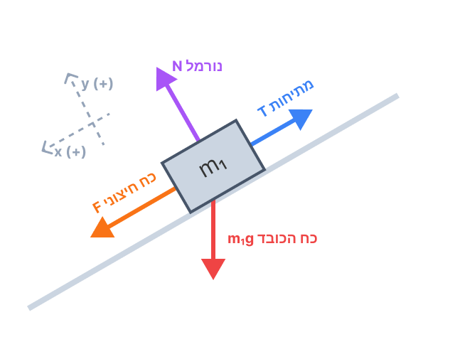
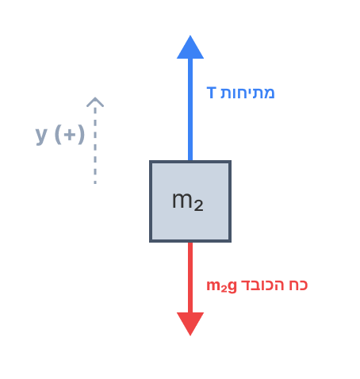
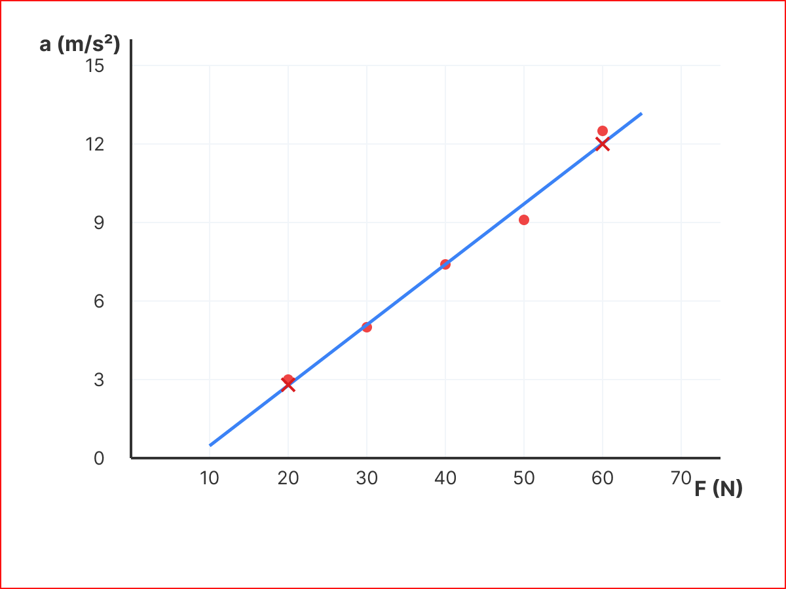

שלום תלמידים יקרים 👋
בשאלה זו אנו מתמודדים עם בעיית דינמיקה קלאסית. בניתוח נתונים ניסויים (סעיפים ג-ה), חשוב לזכור את כלל הברזל של מעבדות בפיזיקה: אנו מותחים את קו המגמה לפי העין בעזרת סרגל, מנסים להעביר אותו קרוב ככל הניתן למרכז הנקודות. לאחר מכן, כל חישוב שנידרש לעשות יתבסס אך ורק על שתי נקודות שבחרנו מתוך הקו שסרטטנו, ולא על הנקודות המקוריות של הניסוי.
סעיף א': תרשים כוחות חופשי (FBD) וקביעת צירים
שלב 1: מה נתון?
- מערכת של שני גופים: \( m_1 \) ו- \( m_2 \).
- הגוף \( m_1 \) נמצא על מדרון משופע בזווית \( \alpha \). המדרון חלק (אין חיכוך).
- החוט והגלגלת אידיאליים, לכן המתיחות \( T \) שווה בשני צדי החוט.
- על גוף \( m_1 \) מופעל כוח קבוע \( F \) במקביל למדרון כלפי מטה.
- הגוף \( m_1 \) נע במורד המדרון בתאוצה \( a \).
שלב 2: מה מחפשים?
לסרטט תרשים כוחות חופשי לכל אחד מהגופים בנפרד, כולל קביעת מערכת צירים מתאימה.
שלב 3: נוסחאות ומושגים בשימוש:
כוח כובד: \( W = mg \) מתיחות: \( T \) כוח נורמלי: \( N \)שלב 4: הצבה ופתרון (תרשימי הכוחות)
כדי להקל על פתרון המשוואות, ניצור "ציר תנועה" משותף למערכת. נגדיר את הכיוון החיובי כך שיעקוב אחר תנועת הגופים לאורך החוט: מכיוון שהגוף \( m_1 \) מאיץ במורד המדרון ומושך אחריו את הגוף \( m_2 \), נגדיר עבור \( m_1 \) את הכיוון החיובי (ציר \( x \)) במורד המדרון. בהתאמה, עבור הגוף \( m_2 \), הכיוון החיובי (ציר \( y \)) ייקבע כלפי מעלה. כך אנו מוודאים שהתאוצה של שני הגופים תיוצג על ידי אותו משתנה חיובי (\( a \)).
תרשים עבור \( m_1 \)

תרשים עבור \( m_2 \)

סעיף ב': פיתוח ביטוי לתאוצה
שלב 1: מה נתון?
תרשימי הכוחות שסרטטנו בסעיף א'. מערכת הצירים מוגדרת עם כיוון התנועה.
שלב 2: מה מחפשים?
לפתח ביטוי עבור התאוצה \( a \) כתלות בכוח המשתנה \( F \) ושאר פרמטרי המערכת (מסות וזווית).
שלב 3: נוסחאות בשימוש:
החוק השני של ניוטון: \( \Sigma F = m \cdot a \)שלב 4: הצבה ופתרון
נרשום את משוואות התנועה לפי החוק השני של ניוטון:
עבור \( m_1 \) (בכיוון המדרון מטה, מוגדר כחיובי):
\[ F + m_1g \sin\alpha - T = m_1a \]עבור \( m_2 \) (בכיוון מעלה, מוגדר כחיובי):
\[ T - m_2g = m_2a \]נחבר את שתי המשוואות יחד: פעולה זו מאפשרת לנו "להעלים" את המתיחות הלא ידועה \( T \) (כי \( -T \) ו-\( +T \) מבטלים זה את זה):
\[ (F + m_1g \sin\alpha - T) + (T - m_2g) = m_1a + m_2a \] \[ F + m_1g \sin\alpha - m_2g = a(m_1 + m_2) \]עכשיו נבודד את התאוצה \( a \) שלב אחר שלב. תחילה, נחלק את שני אגפי המשוואה בביטוי של המסות \( (m_1 + m_2) \):
\[ a = \frac{F + m_1g \sin\alpha - m_2g}{m_1 + m_2} \]כעת, מכיוון שבהמשך נידרש לסרטט גרף של \( a \) כפונקציה של \( F \), נסדר את המשוואה במבנה של קו ישר (\( y = mx + b \)). לשם כך, נפריד את השבר הגדול לשני שברים נפרדים: חלק אחד שמכיל את \( F \) (המשתנה הבלתי תלוי שלנו - ה"איקס"), וחלק שני שמכיל את שאר הגורמים הקבועים (שישמש כנקודת החיתוך):
\[ a = \frac{F}{m_1 + m_2} + \frac{m_1g \sin\alpha - m_2g}{m_1 + m_2} \]לסיום, כדי שהשיפוע יהיה ברור לעין, נוציא את \( F \) ככופל נפרד ליד השבר, ונוציא גורם משותף \( g \) מהמונה של האיבר השני:
סעיף ג': סרטוט הגרף וקו מגמה
שלב 1: מה נתון?
טבלת נתוני הניסוי המציגה את הקשר בין הכוח המופעל לבין התאוצה. הנקודות הן: \( (20, 3.0), (30, 5.0), (40, 7.4), (50, 9.1), (60, 12.5) \).
שלב 2: מה מחפשים?
לסרטט גרף פיזור של הנקודות במערכת צירים תקנית, ולהעביר דרכן קו מגמה מתאים (קו ישר).
שלב 3: חוקי סרטוט גרף בבגרות:
ציר X = המשתנה הבלתי תלוי (הכוח F) ציר Y = המשתנה התלוי (התאוצה a) כותרות לצירים + יחידות מידהשלב 4: ביצוע הסרטוט
במבחן בגרות, מעבירים "לפי העין" בעזרת סרגל את הקו המיטבי – קו שעובר קרוב ככל הניתן לכל הנקודות בפיזור מאוזן.

גרף 1: תאוצת המערכת כפונקציה של הכוח המופעל. הנקודות האדומות הן נתוני הניסוי. הצלבים הכחולים מסמנים נקודות שנבחרו מהקו לטובת חישובים.
סעיף ד': חישוב מסת הגופים
שלב 1: מה נתון?
נתון כי המסות שוות: \( m_1 = m_2 = m \). יש לנו את קו המגמה שסרטטנו בסעיף ג', ואת המשוואה התיאורטית שפיתחנו בסעיף ב'.
שלב 2: מה מחפשים?
למצוא את ערכה המספרי של המסה \( m \) באמצעות השוואה בין המודל התיאורטי לנתוני הגרף.
שלב 3: נוסחאות בשימוש:
שיפוע מתוך גרף: \( Slope = \frac{\Delta y}{\Delta x} = \frac{\Delta a}{\Delta F} = \frac{a_2 - a_1}{F_2 - F_1} \) שיפוע מהתיאוריה: מקדם ה-F במשוואה של סעיף ב'שלב 4: הצבה ופתרון - צעד אחר צעד
חלק 1: חישוב שיפוע הגרף הניסויי
נבחר שתי נקודות הנמצאות במדויק על קו המגמה שסרטטנו (המסומנות בצלבים כחולים בגרף):
- נקודה ראשונה: \( (F_1, a_1) = (20, 2.8) \)
- נקודה שנייה: \( (F_2, a_2) = (60, 12.0) \)
נציב את ערכי הנקודות בנוסחת השיפוע:
\[ \text{Slope}_{graph} = \frac{12.0 - 2.8}{60 - 20} \]נחשב את המונה והמכנה בנפרד:
\[ \text{Slope}_{graph} = \frac{9.2}{40} = 0.23 \text{ kg}^{-1} \]חלק 2: מציאת הקשר התיאורטי לשיפוע
נסתכל על המשוואה התיאורטית שפיתחנו בסעיף ב': \( a = \left( \frac{1}{m_1 + m_2} \right) \cdot F + ... \)
הביטוי שכופל את המשתנה הבלתי תלוי (\( F \)) הוא השיפוע של הישר. נציב בביטוי זה את הנתון מהשאלה שהמסות שוות (\( m_1 = m_2 = m \)):
\[ \text{Slope}_{theory} = \frac{1}{m + m} = \frac{1}{2m} \]חלק 3: השוואה ובידוד המסה
כדי למצוא את המסה בניסוי, נשווה את השיפוע התיאורטי לערך המספרי של השיפוע שמצאנו מהגרף:
\[ \frac{1}{2m} = 0.23 \]כדי לחלץ את הנעלם \( m \) מהמכנה, נכפול את שני אגפי המשוואה בביטוי \( 2m \):
\[ 1 = 0.23 \cdot 2m \]נבצע את הכפל באגף ימין:
\[ 1 = 0.46m \]כעת, נחלק את שני האגפים במקדם 0.46 כדי לבודד את המסה:
\[ m = \frac{1}{0.46} \approx 2.174 \text{ kg} \]סעיף ה': תנועה במהירות קבועה
שלב 1: מה נתון?
המערכת צריכה לנוע במהירות קבועה.
שלב 2: מה מחפשים?
לחשב מהו גודל הכוח \( F \) שצריך להפעיל כדי לייצר מצב זה.
שלב 3: נוסחאות בשימוש:
החוק הראשון של ניוטון: במצב של מהירות קבועה \( \Rightarrow a = 0 \) משוואת ישר (קו מגמה): \( y = mx + b \Rightarrow a = \text{Slope} \cdot F + b \)שלב 4: הצבה ופתרון - צעד אחר צעד
חלק 1: השלמת משוואת הישר של הניסוי
כדי לחשב את הכוח הדרוש, אנו זקוקים למשוואה המלאה המקשרת בין תאוצה לכוח בניסוי שלנו. התבנית היא \( a = \text{Slope} \cdot F + b \). את השיפוע מצאנו בסעיף הקודם (\( 0.23 \)), אך חסרה לנו נקודת החיתוך עם ציר התאוצה (\( b \)).
כדי למצוא את \( b \), נציב את אחת הנקודות מקו המגמה, למשל הנקודה \( (F, a) = (20, 2.8) \), לתוך המשוואה:
\[ 2.8 = 0.23 \cdot 20 + b \]נבצע את הכפל:
\[ 2.8 = 4.6 + b \]נחסר 4.6 משני אגפי המשוואה כדי לבודד את \( b \):
\[ b = 2.8 - 4.6 = -1.8 \]כעת יש לנו את משוואת התנועה המלאה והסופית של הניסוי:
\[ a = 0.23F - 1.8 \]חלק 2: יישום תנאי הפיזיקה (מהירות קבועה)
השאלה דורשת מצב של "מהירות קבועה". על פי החוק הראשון של ניוטון, אם גוף נע במהירות קבועה (או עומד במקום), שקול הכוחות עליו הוא אפס, ולכן גם התאוצה שלו היא אפס. מכאן שנדרוש: \( a = 0 \).
נציב \( a = 0 \) במשוואת הישר שלנו כדי למצוא את הכוח \( F \) המתאים:
\[ 0 = 0.23F - 1.8 \]נעביר את האיבר החופשי (-1.8) לאגף השמאלי על ידי הוספת 1.8 לשני האגפים:
\[ 1.8 = 0.23F \]נחלק את המשוואה במקדם של \( F \) (שהוא 0.23) כדי לבודד אותו:
\[ F = \frac{1.8}{0.23} \approx 7.826 \text{ N} \]בנוסף, הדרך היעילה והבטוחה ביותר לפתור סעיפים הדורשים חילוץ נתונים מגרף, היא לבנות קודם את משוואת הישר המלאה (כולל מציאת נקודת החיתוך \(b\)). ברגע שיש לכם את המשוואה ביד (\(a = 0.23F - 1.8\)), יש לכם כלי עוצמתי - פשוט מציבים את התנאי החדש ומגלים את התשובה בקלות!